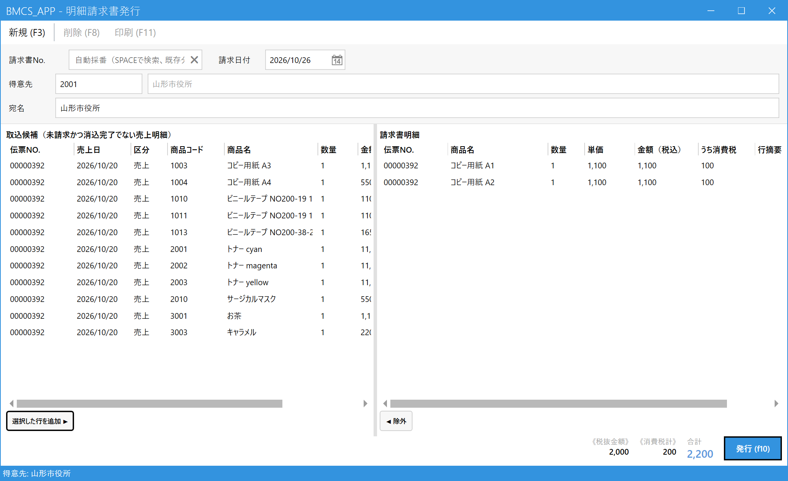

明細請求書を発行する（都度請求）
こんなときに使います
官公庁・学校など都度請求の得意先に、納品した売上の一部を選んでその都度請求書を出します。月末の締め処理は行いません。
宛名（学校のクラス名・先生名など）を、請求書ごとに変えられます。
官公庁・学校など都度請求の得意先に、納品した売上の一部を選んでその都度請求書を出します。月末の締め処理は行いません。
宛名（学校のクラス名・先生名など）を、請求書ごとに変えられます。
締め取引の得意先（20日締め・末日締めなど）は、この画面ではなく請求締め処理を使います。
1.得意先を決める
メインメニューの「請求」の中の「明細請求書発行」を開き、得意先欄にコードを入れて Enter（わからなければ Space で検索）。その得意先のまだ請求していない売上明細が、左側の「取込候補」に出ます。

- 請求書No.：新規のときは空欄のまま（発行時に自動で付きます）。発行済みの請求書を見るときは、番号を入れて Enter、または Space で検索します。
- 請求日付：請求書の日付（今日が入っています）。
- 得意先：コード＋名称。
- 宛名：請求書に印字する宛名です。得意先名が入るので、今回だけ変えたいときはここを直接書き換えます（例：「致道館高等学校 2年3組 ○○先生」）。
- 取込候補：未請求で、まだ入金が済んでいない売上明細です。
2.請求書に載せる明細を選ぶ
左の候補から、この請求書に載せたい行を選んで「選択した行を追加 ▶」。右の「請求書明細」に移ります。行をダブルクリックや Enter でも移せます。間違えたときは、右の行を選んで「◀ 除外」。

- 載せたい行を選びます（クリック）。
- 選択した行を追加 ▶。
- 請求書に載る明細。金額は税込で、うち消費税も表示されます。
- 外したい行は、右で選んで◀ 除外。
- 税抜金額・消費税計・合計：請求書の合計金額です。
- 発行 (F10)：請求書を確定します。
3.発行して印刷する
- 宛名・明細・合計を確認し、発行 (F10) を押します。
- 発行されると請求書Noが付き、画面は空に戻ります。載せた売上は「請求済み」になります。
- 請求書を印刷するには、請求書Noを入力して Enter で呼び出し、印刷 (F11) を押します。
請求書を発行した売上は、訂正・取消ができません。内容に誤りがあれば、いったん取消してから出し直します（4章）。
4.発行した請求書を取り消す
請求書Noを入力して発行済みの請求書を呼び出し、削除 (F8) を押します（確認メッセージが出ます）。請求書は「取消」状態になり、載せていた売上は再び請求できる状態（未請求）に戻ります。取消後に、同じ売上で新しい請求書を作り直せます。